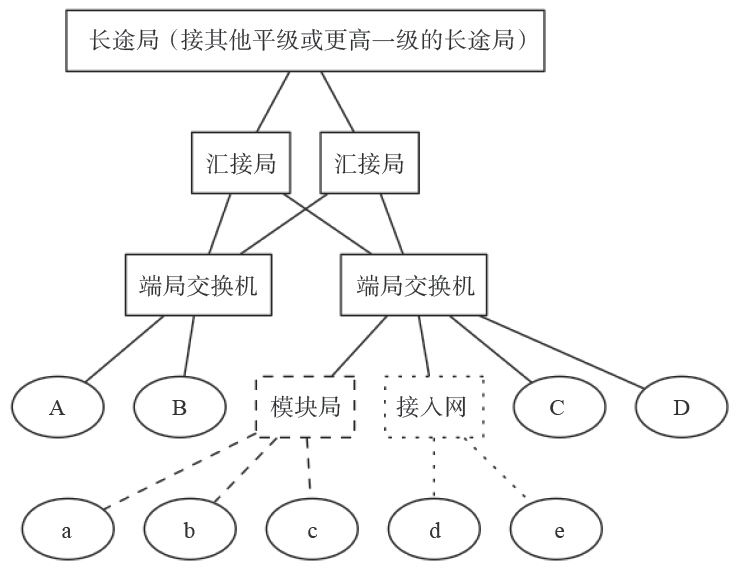

1.3 我国电话网结构
我国的电话网由本地网与长途网组成，并通过国际交换中心进入国际电话网。
原有电话网的结构采用了等级制，共有五级，分别用C1～C5表示。其中C1～C4构成长途电话网，C5（端局）及汇接局（Tm）构成本地网。但随着社会和经济的发展，电话业务量迅速增加，横向话务流量日趋增多，新业务的需求不断涌现，五级网络结构由于转接段数多造成了接续时延长、传输损耗大、网络管理工作复杂、不利于新业务的开展等问题。因此，我国电话网正在由五级电话网向三级电话网转变，即将原来的C1级和C2级长途交换中心演变为DC1，原来的C3级和C4级交换中心演变为DC2，以便减少转接段数。下面，我们主要以本地网为例简单讲解一下电话网的结构。
图1-7所示的主体部分为我国一地级市固定电话网（称为本地网）的结构。通常，用户话机（如A、B、C、D）通过一对电话线连接到距离最近的交换机上，该交换机称为端局交换机（一般以区或县为单位）。端局交换机通过局间中继线连接到汇接局 [1] 。长途电话需要通过所在长途局与其他长途局相连。但根据话务量要求，汇接局也可以直接与其他长途局开通高速直达中继（未画出）。为节省用户线，在一些人口比较集中的地方（如学校、小区），会在端局下再设模块局或接入网，用户话机（如a、b、c、d、e）则就近接入到模块局（或接入网）上。

图1-7 我国固定电话网结构
在我国，智能网一般用于实现电话卡、预付费或400/800类业务，而前几年新部署的NGN（Next Generation Network，下一代网络，一般指软交换）则支持更灵活、更复杂的业务，包括IM/SMS/MMS等消息类业务、点对点交互式多媒体/文件共享/游戏等多方协作交互业务、内容分发业务、广播/多播业务、企业托管业务，以及数据检索、数据通信、在线应用、传感器网络、远程控制等各类多媒体业务和数据业务。
但是技术发展很快，为响应国家“光进铜退” [2] 的号召，现在已经实现了直接光纤到户，也就是说很快全网都能IP化了。新技术代替旧技术，为用户带来了五彩斑斓的业务，但旧技术的一些优点则永远让人怀念，最典型的就是原来的电话线是带电的，家里停电不影响打电话。但光纤是不带电的，停电以后用户就不能打电话了（除非加UPS）。
在我国的移动网络中，大量部署了IMS。IMS具有组网灵活的优点，但涉及的网元和基本概念很多，对于非专业人士来说理解起来有些困难。我们将在本章的最后一节对IMS进行专门的讨论。
[1] 为了保证安全，汇接局通常会成对出现，平常实行负荷分担，一台汇接局出现故障，与之配对的汇接局会承担其负责的所有话务。
[2] 用户家里的电话线使用铜双绞线。